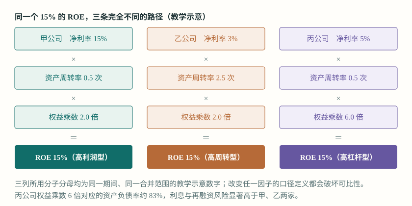

杜邦分析与综合评分
ROE 相同的两家公司，可能一家靠品牌溢价，另一家靠六倍杠杆。杜邦分解把回报率拆成可核对的因子，F-Score 把九个“是/否”问题变成一张清单；两者都是筛选工具，不是买入卖出信号。
同样的 ROE，不同的生意
下面三家均为教学示意公司，数字是为演示代数关系而设定的，不对应任何真实企业的报表。它们的净资产收益率都是 15%，但拆开来看，驱动因子完全不同：

| 教学示意公司 | 净利率 | 资产周转率 | 权益乘数 | ROE | 拆解后的启示 |
|---|---|---|---|---|---|
| 甲公司 | 15% | 0.5 | 2.0 | 15% | 卖出更高价格的生意，收入变动对利润弹性大 |
| 乙公司 | 3% | 2.5 | 2.0 | 15% | 薄利多销，对销量与库存周转敏感 |
| 丙公司 | 5% | 0.5 | 6.0 | 15% | 靠负债放大收益，利息与再融资风险最高 |
三者都能算出 15%，但抗风险能力不同：甲公司的风险在需求端，乙公司在运营端，丙公司在融资端。因此杜邦分解的用途不是“得到一个更好的分数”，而是知道该去检查哪些驱动变量，以及这些变量在下一期是否可重复。
传统杜邦：三因子与代数一致性
杜邦分解做的事情很简单：把一个比率写成三个比率的乘积。乘出来必须与原比率严格相等，否则就是代数错误。
用上文甲公司的教学示意数据复算一次：营业收入 1,000 万元、净利润 150 万元、平均总资产 2,000 万元、平均所有者权益 1,000 万元。于是净利率 15% × 周转率 0.5 次 × 权益乘数 2 倍 = 15%，与 150 ÷ 1,000 直接计算的 ROE 一致。
为什么要用“平均”资产与“平均”权益？
分子是期间数（利润），分母是时点数（资产、权益），两者不同基。用期初与期末的平均余额作分母，比只用期末余额更能反映整个期间的实际占用水平；若用期末数，则必须明确声明是“期末口径”，且同一组对比中不得混用。
三个常见错误：一是分母用“归母权益”而分子用含少数股东损益的净利润，合并范围不匹配；二是把期末数与期间数直接相除；三是净资产为负时仍用该比率作比较——此时比率失去经济含义，应改用其他指标或直接说明不适用。
经营与金融：改进版分解
传统三因子没有区分“做生意赚的”和“借钱放大的”。改进版做法是先把资产与负债划分为经营性和金融性两类，把杠杆效应单独拿出来：
其中净经营资产等于经营资产减经营负债，净金融负债等于金融负债（借款、应付债券、租赁负债等）减金融资产（现金、交易性金融资产等）。这个公式给出了两个可验证的结论：当经营ROE高于税后利息率时，加杠杆会抬升实际ROE；一旦经营ROE跌破税后利息率，杠杆效应转为负值，同样的负债会加速侵蚀股东回报。
| 教学示意情形 | 经营ROE | 税后利息率 | 净财务杠杆 | 杠杆效应 |
|---|---|---|---|---|
| 经营回报高于利息成本 | 18% | 5% | 0.4 倍 | (18% − 5%) × 0.4 ≈ +5.2% |
| 经营回报低于利息成本 | 3% | 5% | 0.4 倍 | (3% − 5%) × 0.4 ≈ −0.8% |
两个提醒：一是经营与金融的划分属于分析者口径（常见于“管理用财务报表”），不同机构对现金、货币基金、租赁负债的归类可能不同，必须在报告中声明，不能当作准则规定的列报结构；二是租赁负债已按《企业会计准则第 21 号》（2018 年修订）进入资产负债表，以前“经营租赁都在表外”的说法不再成立。
Piotroski F-Score 九项检查
Piotroski（2000）提出的 F-Score 是一组九道“是/否”判断题，每答“是”得 1 分，满分 9 分。它的价值在于把多个维度固定下来、年复一年地用同一套问题检查，而不是给出一个可以直接下单的结论。
本期 ROA 为正；经营活动现金流为正；ROA 同比上升；经营活动现金流大于净利润。
长期负债占资产比同比下降；流动比率同比上升；本年度未增发普通股。最后一项需注意：增发本身不是坏事，需结合募集用途判断，因此这一项在成长型公司身上会系统性地扣分。
毛利率同比上升；总资产周转率同比上升。
适用边界：F-Score 最初构造于美国制造业与消费类样本，银行、保险、券商等金融企业的资本结构与营运资本含义特殊，直接套用会得到无意义的分数；会计政策或报告期发生变更、或本期含大额并购的公司，同比方向的比较需要先调整为可比口径。因此可以把它当作同行业内、多年序列上的筛选器，而不是跨行业排名或者交易信号。
关于原始研究的结论，这里只陈述可核对的描述：Piotroski 在 1976–1996 年的美国样本上发现，“高账面市值比 + 高 F-Score”组合的历史平均回报高于同类低分组合。它是一段特定市场、特定期间样本的事后统计，不构成对未来收益的承诺；在 A 股能否重现需要独立回测，不能把该项结论直接平移。
杜邦工作台
初始值为甲公司（教学示意），可手工复算：净利率 = 150 ÷ 1000，周转率 = 1000 ÷ 2000，权益乘数 = 2000 ÷ 1000，三者连乘即 ROE；净财务杠杆 =（有息负债 − 现金）÷ 平均权益。
修改数据，即时复算
全部金额单位为万元；平均余额请填期初与期末的算术平均，并在同一组对比中保持一致。
把平均所有者权益从 1,000 改为 400（相当于提高杠杆），其余不变：权益乘数变为 5 倍，ROE 升到 37.5%。同一个利润水平因为权益基数变小而回报率“变好”，这正是需要拆开看杠杆的原因。
评分法的边界与自测
把多个指标压缩成一个总分很诱人，但会丢掉信息，也会把权重选择的影响放大。下表列三种常见工具各自的位置：
| 工具 | 适合用来做什么 | 不适合用来做什么 | 必须声明的口径 |
|---|---|---|---|
| 杜邦三因子 | 定位 ROE 的来源，找出下一步该查的变量 | 评判哪家公司“更好” | 平均或期末余额、合并口径 |
| 改进版分解 | 把经营回报与融资效应分开 | 当作准则规定的列报结构 | 经营与金融的划分方式 |
| Piotroski F-Score | 同行业内、多年序列的快速筛选 | 跨行业排名、交易信号 | 同比可比口径、增发与否 |
加权综合评分（包括常见的沃尔评分法、以 1928 年亚历山大·沃尔命名的框架）本质上是一张自查清单：权重、基准值和分组由使用者自己设定，业界没有统一标准。因此它可以用在内部流程里保持一致性，但不应当被当作对外的公司评级。如果一定要给总分，至少要做一次敏感性检验：把权重或基准值改变 10%，看排名是否发生实质变化。
自测一：两家公司 ROE 都是 15%，可以先说哪家更好吗？
不能。需先拆解因子、核对分子分母口径，再看各自的行业特征与负债结构。高杠杆型公司的 15% 对应更高的利息与再融资风险，但若行业普遍高杠杆且现金流稳定，也不能一概否定。
自测二：一家公司 F-Score 得 9 分，是否意味着应当买入？
不是。F-Score 衡量的是财务特征的方向性变化，不包含估值、行业景气、治理与竞争格局；得分高只意味着“该年份的财务特征在历史样本中属于更稳的那一类”。
结论：综合评分工具的产出应当是一张“待验证清单”：哪些因子支撑了回报、哪些因子在恶化、每个因子需要用什么证据核实。
依据与边界
本页所有公司名称（甲、乙、丙）与金额均为教学示意，为演示代数关系而设定，不对应任何真实企业的报表，不构成投资建议。
文献引用：Piotroski, J. D. (2000), “Value Investing: The Use of Historical Financial Statement Information to Separate Winners from Losers”, Journal of Accounting Research，样本为美国市场 1976–1996 年。本文仅转述其结论方向，未复制其数据；该结论对其他国家、期间与市场环境的适用性需独立验证。
公式与评分框架属于作者讲解；有关租赁负债入表、披需与列报的强制要求以下列官方文件为准。